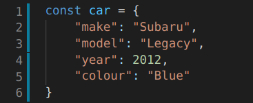
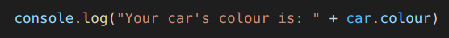

An analogy to describe the difference between HTML and CSS
One way to think about the differences between HTML and CSS is to assume the analogy of HTML being the nouns in our language, and CSS being the adjectives. Taking this analogy further, let us use an object, for instance, a ball.
The role of HTML is quite simple, it states what type of content we are dealing with. In relation to our object, the content is simply a ball. CSS allows us to describe the ball visually. So, we could say that we have a red
ball or a black and white ball. From our analogy, we can see that HTML deals with the question, what is it? Whereas CSS asks, how does it look? That HTML deals with the type of content we have, and CSS the presentation of this
content.
Control Flow and Loops
The control flow is the order in which a computer executes or runs a set of instructions written in a script. The code within a script is run in order from the very first line right to the last, unless the computer encounters structures,
such as a condition where certain criteria is to be met in order to do something before continuing to the last line of the script. Or a loop, where a segment of code is repeated until a criteria is met.
Explain the differences between accessing data from arrays and objects
First and foremost, an array is essentially an object that is used to create list-like objects. Afterall, almost everything in an object-oriented programming language like JavaScript is an object. This may sound convoluted and
confusing but getting our heads around this is important. Therefore, for us to understand the difference between accessing data from arrays and objects, we must understand what an object is, how it behaves, and how we interact
with them.
An object in JavaScript, like in many other programming languages, can be likened to real life objects. Hence it can be useful to grasp the concept of an object with real life, tangible objects. To assist us, let's use an example
of a cup. A cup is an object, and we know that a cup also has properties. A cup has a colour, weight, height, etc.
In the same way, JavaScript objects also have properties, which define their characteristics. We can look at an object’s properties as a variable attached to the object, and the variables used are basically the same as an ordinary
JavaScript variable. Accessing an object’s properties can be done by using simple dot-notation.
To help us get a better understanding, let’s create a car object as an example. We'll also give our car object properties for make, model, year, and colour.

As explained previously, to access an object’s properties or data, we just use simple dot-notation.

Arrays are a special type of object which allows you to store multiple values into a single variable. It stores a fixed size sequential collection of elements of the same type. Accessing data or elements of an array can be done
in multiple ways. Arrays have multiple methods, including those for accessing data or elements from within an Array. We can use an elements index to retrieve a specific item, use a loop to iterate through the entire array,
as well as adding and removing elements of an array.
Explain what functions are and why they are useful
Functions can be likened to a procedure or a recipe. It allows you to define a block of code that will perform a task or calculate a value. However, in order to qualify as a function, the block of code should take an input and
return an output. In order to call or use functions, they must first be defined.
Functions are one of the fundamental building blocks in JavaScript. They are a fantastic tool, saving time, work, and space. Writing functions initially can take up time. However, in the long run, programs and scripts will be better
organised, and can perform more efficiently.